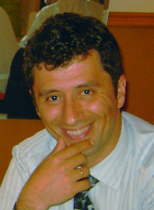

Conrado Pérez Martín
Conrado Pérez Martín 

 Haz clic aquí para detalles de la Familia de Conrado con Almudena Vicente Ramos
Haz clic aquí para detalles de la Familia de Conrado con Almudena Vicente Ramos
This page is within a frameset. View the entire genealogy report of Pérez Martín families, or surname index of Pérez Martín pedigrees or report summary of Pérez Martín heritage from "Árbol Genealógico de Manolo y Amalia".
Family Systems Therapy.
© 2006 GenoPro Inc. All Rights Reserved.